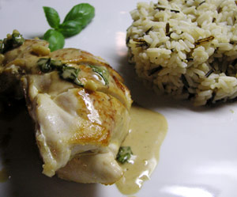

Pouletbrust gefüllt mit Parmesan, Pinienkernen und Basilikum
5 von 6Vorbereitung:
1 Pouletbrust pro Person (oder je nach Hunger... ;-) ) von der Seite her mit scharfem Messer aufschlitzen, so dass die Pouletbrust zu einer Tasche wird. Tasche mit Salz und Pfeffer würzen, füllen mit ca 10 Pinienkernen, ca 20g Grana Padano Scheibchen und 3-4 Basilikum-Blättern. Mit 2 Zahnstochern Pouletbrust wieder verschliessen.
Wildreis im Verhältnis 1 zu 2 mit Wasser und Bouillon kochen.
Gleichzeitig, Pouletbrust kurz und heiss anbraten bis schöne Braunfärbung, danach Hitze zurückstellen, damit auch noch das Innere gekocht wird (ca. 10min). Pouletbrüstchen aus der Pfanne nehmen und warm stellen. Bratensatz mit 1 dl Weisswein ablöschen. Wenn halb eingekocht, 1 dl Bouillon dazugeben, wieder halb einkochen. Dann 1 dl Vollrahm mitkochen, bis Sauce sämig wird. Sauce mit Pfeffer und Salz abschmecken, und eine Handvoll grob geschnittene Basilikumblätter dazugeben.
